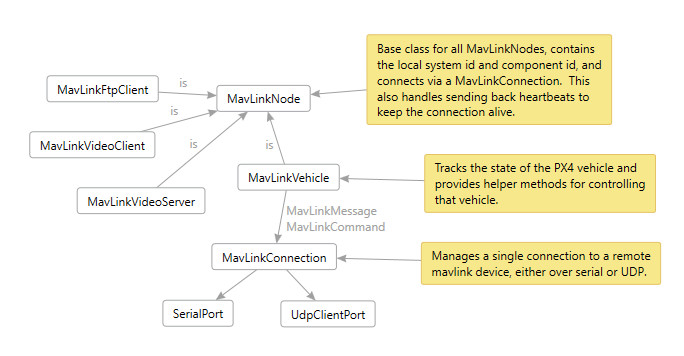
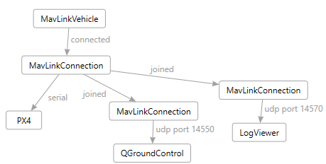
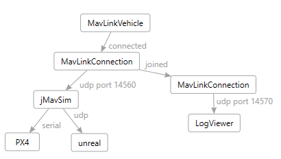
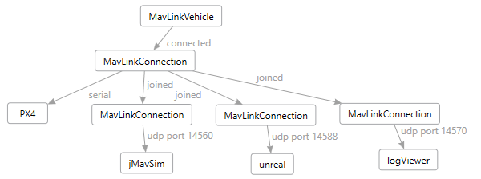
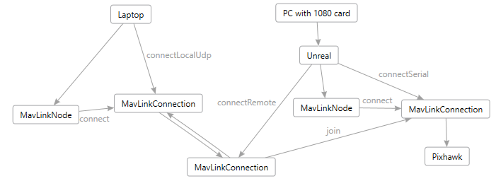

Welcome to MavLinkCom#
MavLinkCom is a cross-platform C++ library that helps connect to and communicate with MavLink based vehicles. Specifically this library is designed to work well with PX4 based drones.
Design#
You can view and edit the Design.dgml diagram in Visual Studio.

The following are the most important classes in this library.
MavLinkNode#
This is the base class for all MavLinkNodes (subclasses include MavLinkVehicle, MavLinkVideoClient and MavLinkVideoServer). The node connects to your mavlink enabled vehicle via a MavLinkConnection and provides methods for sending MavLinkMessages and MavLinkCommands and for subscribing to receive messages. This base class also stores the local system id and component id your app wants to use to identify itself to your remote vehicle. You can also call startHeartbeat to send regular heartbeat messages to keep the connection alive.
MavLinkMessage#
This is the encoded MavLinkMessage. For those who have used the mavlink.h C API, this is similar to mavlink_message_t. You do not create these manually, they are encoded from a strongly typed MavLinkMessageBase subclass.
Strongly typed message and command classes#
The MavLinkComGenerator parses the mavlink common.xml message definitions and generates all the MavLink* MavLinkMessageBase subclasses as well as a bunch of handy mavlink enums and a bunch of strongly typed MavLinkCommand subclasses.
MavLinkMessageBase#
This is the base class for a set of strongly typed message classes that are code generated by the MavLinkComGenerator project. This replaces the C messages defined in the mavlink C API and provides a slightly more object oriented way to send and receive messages via sendMessage on MavLinkNode. These classes have encode/decode methods that convert to and from the MavLinkMessage class.
MavLinkCommand#
This is the base class for a set of strongly typed command classes that are code generated by the MavLinkComGenerator project. This replaces the C definitions defined in the mavlink C API and provides a more object oriented way to send commands via the sendCommand method on MavLinkNode. The MavLinkNode takes care of turning these into the underlying mavlink COMMAND_LONG message.
MavLinkConnection#
This class provides static helper methods for creating connections to remote MavLink nodes, over serial ports, as well as UDP, or TCP sockets. This class provides a way to subscribe to receive messages from that node in a pub/sub way so you can have multiple subscribers on the same connection. MavLinkVehicle uses this to track various messages that define the overall vehicle state.
MavLinkVehicle#
MavLinkVehicle is a MavLinkNode that tracks various messages that define the overall vehicle state and provides a VehicleState struct containing a snapshot of that state, including home position, current orientation, local position, global position, and so on. This class also provides a bunch of helper methods that wrap commonly used commands providing simple method calls to do things like arm, disarm, takeoff, land, go to a local coordinate, and fly under offbaord control either by position or velocity control.
MavLinkTcpServer#
This helper class provides a way to setup a "server" that accepts MavLinkConnections from remote nodes. You can use this class to get a connection that you can then give to MavLinkVideoServer to serve images over MavLink.
MavLinkFtpClient#
This helper class takes a given MavLinkConnection and provides FTP client support for the MAVLINK_MSG_ID_FILE_TRANSFER_PROTOCOL for vehicles that support the FTP capability. This class provides simple methods to list directory contents, and the get and put files.
MavLinkVideoClient#
This helper class takes a given MavLinkConnection and provides helper methods for requesting video from remote node and packaging up the MAVLINK_MSG_ID_DATA_TRANSMISSION_HANDSHAKE and MAVLINK_MSG_ID_ENCAPSULATED_DATA messages into simple to use MavLinkVideoFrames.
MavLinkVideoServer#
This helper class takes a given MavLinkConnection and provides the server side of the MavLinkVideoClient protocol, including helper methods for notifying when there is a video request to process (hasVideoRequest) and a method to send video frames (sendFrame) which will generate the right MAVLINK_MSG_ID_DATA_TRANSMISSION_HANDSHAKE and MAVLINK_MSG_ID_ENCAPSULATED_DATA sequence.
Examples#
The following code from the UnitTest project shows how to connect to a Pixhawk flight controller over USB serial port, then wait for the first heartbeat message to be received:
auto connection = MavLinkConnection::connectSerial("drone", "/dev/ttyACM0", 115200, "sh /etc/init.d/rc.usb\n");
MavLinkHeartbeat heartbeat;
if (!waitForHeartbeat(10000, heartbeat)) {
throw std::runtime_error("Received no heartbeat from PX4 after 10 seconds");
}
The following code connects to serial port, and then forwards all messages to and from QGroundControl to that drone using another connection that is joined to the drone stream.
auto droneConnection = MavLinkConnection::connectSerial("drone", "/dev/ttyACM0", 115200, "sh /etc/init.d/rc.usb\n");
auto proxyConnection = MavLinkConnection::connectRemoteUdp("qgc", "127.0.0.1", "127.0.0.1", 14550);
droneConnection->join(proxyConnection);
auto vehicle = std::make_shared<MavLinkVehicle>(166, 1);
vehicle->connect(connection);
vehicle->startHeartbeat();
std::this_thread::sleep_for(std::chrono::seconds(5));
VehicleState state = vehicle->getVehicleState();
printf("Home position is %s, %f,%f,%f\n", state.home.is_set ? "set" : "not set",
state.home.global_pos.lat, state.home.global_pos.lon, state.home.global_pos.alt);
bool rc = false;
if (!vehicle->armDisarm(true).wait(3000, &rc) || !rc) {
printf("arm command failed\n");
return;
}
if (!vehicle->takeoff(targetAlt).wait(3000, &rc) || !rc) {
printf("takeoff command failed\n");
return;
}
int version = vehicle->getVehicleStateVersion();
while (true) {
int newVersion = vehicle->getVehicleStateVersion();
if (version != newVersion) {
VehicleState state = vehicle->getVehicleState();
float alt = state.local_est.pos.z;
if (alt >= targetAlt - delta && alt <= targetAlt + delta)
{
reached = true;
printf("Target altitude reached\n");
break;
}
} else {
std::this_thread::sleep_for(std::chrono::milliseconds(10));
}
}
vehicle->setMessageInterval((int)MavLinkMessageIds::MAVLINK_MSG_ID_LOCAL_POSITION_NED, 30);
vehicle->requestControl();
int subscription = vehicle->getConnection()->subscribe(
[&](std::shared_ptr<MavLinkConnection> connection, const MavLinkMessage& m) {
if (m.msgid == (int)MavLinkMessageIds::MAVLINK_MSG_ID_LOCAL_POSITION_NED)
{
// convert generic msg to strongly typed message.
MavLinkLocalPositionNed localPos;
localPos.decode(msg);
float x = localPos.x;
float y = localPos.y;
float dx = x - cx;
float dy = y - cy;
float angle = atan2(dy, dx);
if (angle < 0) angle += M_PI * 2;
float tangent = angle + M_PI_2;
double newvx = orbitSpeed * cos(tangent);
double newvy = orbitSpeed * sin(tangent);
float heading = angle + M_PI;
vehicle->moveByLocalVelocityWithAltHold(newvx, newvy, altitude, true, heading);
}
});
vehicle->releaseControl();
if (vehicle->loiter().then([=](bool rc) {
printf("loiter command %s\n", rc ? "succeeded" : "failed");
}
The following code gets all configurable parameters from the drone and prints them:
auto list = vehicle->getParamList();
auto end = list.end();
int count = 0;
for (auto iter = list.begin(); iter < end; iter++)
{
count++;
MavLinkParameter p = *iter;
if (p.type == MAV_PARAM_TYPE_REAL32 || p.type == MAV_PARAM_TYPE_REAL64) {
printf("%s=%f\n", p.name.c_str(), p.value);
}
else {
printf("%s=%d\n", p.name.c_str(), static_cast<int>(p.value));
}
}
MavLinkParameter p;
p.name = "CBRK_USB_CHK";
p.value = 197848;
if (!vehicle->setParameter(p).wait(3000,&rc) || !rc) {
printf("Setting the CBRK_USB_CHK failed");
}
MavLinkVehicle actually has a helper method for this called allowFlightControlOverUsb, so now you know how it is implemented :-)
Advanced Connections#
You can wire up different configurations of mavlink pipelines using the MavLinkConnection class "join" method as shown below.
Example 1, we connect to PX4 over serial, and proxy those messages through to QGroundControl and the LogViewer who are listening on remote ports.

Example 2: simulation can talk to jMavSim and jMavSim connects to PX4. jMavSim can also manage multiple connections, so it can talk to unreal simulator. Another MavLinkConnection can be joined to proxy connections that jMavSim doesn't support, like the LogViewer or a remote camera node.

Example 3: we use MavLinkConnection to connect to PX4 over serial, then join additional connections for all our remote nodes including jMavSim.

Example 4: We can also do distributed systems to control the drone remotely:
